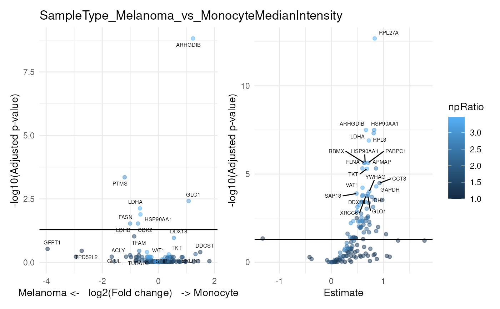

Differential abundance analysis for single-cell proteomics
Source:R/ScpModel-DifferentialAnalysis.R
ScpModel-DifferentialAnalysis.RdDifferential abundance analysis assess the statistical significance of the differences observed between group of samples of interest.
Arguments
- object
An object that inherits from the
SingleCellExperimentclass. It must contain an estimatedScpModelin its metadata.- coefficients
A
character()vector with coefficient names to test.coefficientsandcontrastscannot be both NULL.- contrasts
A
list()where each element is a contrast to test. Each element must be a vector with 3 strings: 1. The name of a categorical variable to test; 2. The name of the reference group: 3. The name of the second group to contrast against the reference group.coefficientsandcontrastscannot be both NULL.- name
A
character(1)providing the name to use to retrieve the model results. When retrieving a model andnameis missing, the name of the first model found inobjectis used.- differentialList
A list of tables returned by
scpDifferentialAnalysis().- fcol
A
character(1)indicating the column to use for grouping features. Typically, this would be protein or gene names for grouping proteins.- ...
Further arguments passed to
metapod::combineGroupedPValues().- fdrLine
A
numeric(1)indicating the FDR threshold bar to show on the plot.- top
A
numeric(1)indicating how many features should be labelled on the plot.- by
A
character(1)used to order the features It indicates which variable should be considered when sorting the results. Can be one of: "Estimate", "SE", "Df", "tstatistic", "pvalue", "padj" or any other annotation added by the user.- decreasing
A
logical(1)indicating whether the features should be ordered decreasingly (TRUE, default) or increasingly (FALSE) depending on the value provided byby.- textBy
A
character(1)indicating the name of the column to use to label points.- pointParams
A
listwhere each element is an argument that is provided toggplot2::geom_point(). This is useful to change point size, transparency, or assign colour based on an annotation (seeggplot2::aes()).- labelParams
A
listwhere each element is an argument that is provided toggrepel::geom_label_repel(). This is useful to change label size, transparency, or assign colour based on an annotation (seeggplot2::aes()).
Running the differential abundance analysis
scpDifferentialAnalysis() performs statistical inference by
means of a t-test on the estimatated parameters. There are 2 use
cases:
Statistical inference for differences between 2 groups
You can contrast 2 groups of interest through the contrasts
argument. Multiple contrasts, that is multiple pairwise group
comparisons, can be performed. Therefore, contrasts must be
provided as a list where each element describes the comparison to
perform as a three-element character vector (see examples). The
first element is the name of the annotation variable that contains
the two groups to compare. This variable must be categorical.
The second element is the name of the reference group. The third
element is the name of the other group to compare against the
reference.
Statistical inference for numerical variables
Numerical variables can be tested by providing the coefficient
argument, that is the name of the numerical annotation variable.
The statistical tests in both use cases are conducted for each
feature independently. The p-values are adjusted using
IHW::ihw(), where each test is weighted using the feature
intercept (that is the average feature intensity). The function
returns a list of DataFrames with one table for each test
contrast and/or coefficient. It provides the adjusted p-values and
the estimates. For contrast, the estimates represent the estimated
log fold changes between the groups. For coefficients, the
estimates are the estimated slopes. Results are only provided for
features for which contrasts or coefficients are estimable, that
are features for which there is sufficient observations for
inference.
Differential abundance at the protein level
scpDifferentialAggregate() combines the differential abundance
analysis results for groups of features. This is useful, for
example, to return protein-level results when data is modelled at
the peptide level. The function heavily relies on the approaches
implemented in metapod::combineGroupedPValues(). The p-values
are combined into a single value using one of the following
methods: Simes' method
(default), Fisher's method, Berger's method, Pearson's method,
minimum Holm's approach, Stouffer's Z-score method, and
Wilkinson's method. We refer to the metapod documentation for
more details on the assumptions underlying each approach. The
estimates are combined using the representative estimate, as
defined by metapod. Which estimate is representative depends on
the selected combination method. The function takes the list of
tables generated by scpDifferentialAnalysis() and returns a new
list of DataFrames with aggregated results. Note that we cannot
meaningfully aggregate degrees of freedom. Those are hence removed
from the aggregated result tables.
Volcano plots
scpAnnotateResults() adds annotations to the differential abundance
analysis results. The annotations are added to all elements of the
list returned by (). See the associated
man page for more information.
scpVolcanoPlot() takes the list of tables generated by
scpDifferentialAnalysis() and returns a ggplot2 scatter plot.
The plots show the adjusted p-values with respect to the estimate.
A horizontal bar also highlights the significance threshold
(defaults to 5%, fdrLine). The top (default 10) features with lowest
p-values are labeled on the plot. You can control which features
are labelled using the top, by and decreasing arguments.
Finally, you can change the point and label aesthetics thanks to
the pointParams and the labelParams arguments, respectively.
See also
ScpModel-Workflow to run a model on SCP data upstream of differential abundance analysis.
scpAnnotateResults()to annotate analysis of variance results.
Examples
library("patchwork")
library("ggplot2")
data("leduc_minimal")
## Add n/p ratio information in rowData
rowData(leduc_minimal)$npRatio <-
scpModelFilterNPRatio(leduc_minimal, filtered = FALSE)
####---- Run differential abundance analysis ----####
(res <- scpDifferentialAnalysis(
leduc_minimal, coefficients = "MedianIntensity",
contrasts = list(c("SampleType", "Melanoma", "Monocyte"))
))
#> DataFrameList of length 2
#> names(2): SampleType_Melanoma_vs_Monocyte MedianIntensity
## IHW return a message because of the example data set has only few
## peptides, real dataset should not have that problem.
####---- Annotate results ----####
## Add peptide annotations available from the rowData
res <- scpAnnotateResults(
res, rowData(leduc_minimal),
by = "feature", by2 = "Sequence"
)
####---- Plot results ----####
scpVolcanoPlot(res, textBy = "gene") |>
wrap_plots(guides = "collect")
## Modify point and label aesthetics
scpVolcanoPlot(
res, textBy = "gene", top = 20,
pointParams = list(aes(colour = npRatio), alpha = 0.5),
labelParams = list(size = 2, max.overlaps = 20)) |>
wrap_plots(guides = "collect")

####---- Aggregate results ----####
## Aggregate to protein-level results
byProteinDA <- scpDifferentialAggregate(
res, fcol = "Leading.razor.protein.id"
)
scpVolcanoPlot(byProteinDA) |>
wrap_plots(guides = "collect")